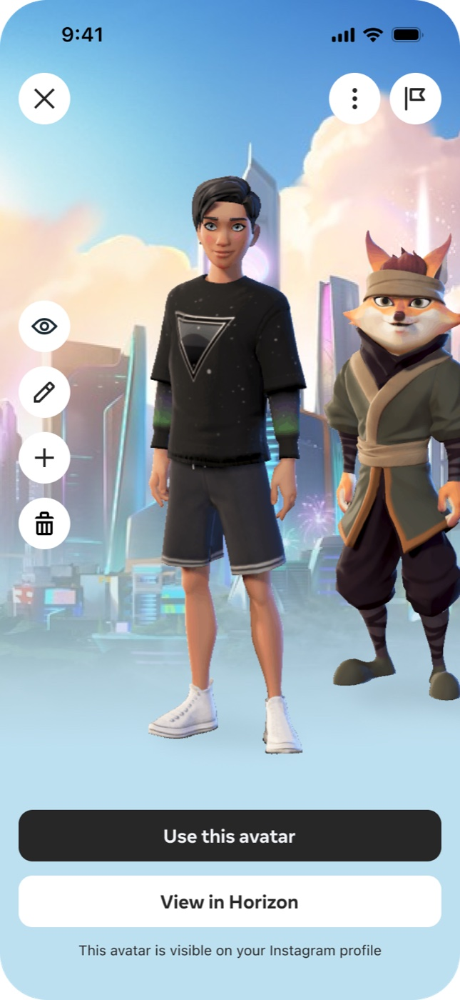
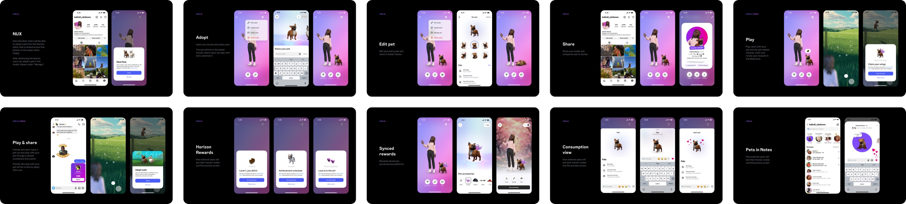

Instagram x Metaverse Big Bets
I defined how the metaverse could become native to Instagram, aligned two organizations around the strategy, and shaped a shared mental model across Facebook, WhatsApp, and Reality Labs.
The metaverse entry point in the Instagram profile, the Pets vision, and the design language for metaverse surfaces across the app family.
Adoption comes from embedding new technology in familiar behavior, not from asking people to go somewhere new.
Pets found product-market fit on Horizon, not Instagram: the behavior needed a destination, and the profile was a waypoint. The team chose not to ship Pets, but the metaverse entry point I defined remained and the pattern carried across the app family.

The metaverse audience is on mobile.
Making the metaverse mainstream required reaching millions of Instagram users on mobile, even though the broader vision was centered on VR experiences.

Hardware mismatch
Existing metaverse products required VR hardware, excluding the mobile-first audience that drives Instagram engagement.

Expression gap
People wanted more playful, low-pressure ways to connect beyond photos and text, but Instagram lacked the interactive, identity-driven features they craved.

Identity mismatch
Avatars felt disconnected from Instagram's identity as a platform built on authentic self-expression, and without a clear narrative, leadership hesitated to give them visibility.
Meet people where they are
I structured the strategy in two phases: start with lightweight social features people already understand on Instagram, then use that foundation to draw them into richer virtual spaces over time.
- Magical portal
- Personalized virtual space
- Avatar-to-avatar hangouts
- Deeper customization
- Avatar sticker rewards
- Low pressure connection on Notes
- Companion virtual pets
- Instant games & rewards
Drag to explore
This framing was key to earning leadership support: it turned an abstract metaverse bet into a concrete, low-risk product strategy.
Why Instagram Pets won
Pets was the only concept strong on all four criteria: self exploratory, creative outlet, feel at home, and bridges to metaverse. I killed the rest.
Avatar greenscreen
Avatars react to content in your place. Native, but a dead end.
My "Vibe"
Personal spaces friends can visit. Closest runner-up, too complex to build.

Mini games
Games like fetch that pull you back daily. Weak on identity.
Magical portal
A portal into a virtual space. A bridge out of Instagram, not into it.
Instagram Pets
Pet companions that travel from profile to Pets Park. Strong on all four.

Pets Park 3D assets
The teams who could build this didn’t work for Instagram.
Pets Park and Avatars had separate roadmaps. I positioned Pets as a low-friction, “cringe-free” way for friends to connect, and aligned both teams around what Instagram could unlock: distribution for Pets and a new surface for Avatars. Both made the work a P0.
Pets Park team
They brought the pet assets and the production capacity to keep making them. I brought Instagram’s distribution: an audience of millions their roadmap had no way to reach.
Avatars team
They brought the infrastructure. I brought the surface: a persistent profile entry point connecting Pets, quests, emotes, and the Avatar Store.
Self exploratory
People customize and nurture a virtual companion that reflects their personality, encouraging identity exploration through pet styles, accessories, and behaviors.
Creative outlet
Pet accessories, avatar pairings, and shareable moments give people a canvas for self-expression, without the pressure of posting photos of themselves.
Feels at home in IG
Instagram Pets live across Notes, DMs, and profiles, making the feature feel native to Instagram rather than a foreign metaverse import.
| Concept | Self Exploratory | Creative Outlet | Feel at Home | Bridges to Metaverse |
|---|---|---|---|---|
| Avatar Greenscreen | ◒ | ● | ● | ○ |
| My "Vibe" | ● | ● | ◒ | ● |
| Instagram Pets | ● | ● | ● | ● |
| Mini Games | ○ | ◒ | ○ | ● |
| Avatar Dance | ○ | ● | ● | ○ |
| Magical Portal | ○ | ◒ | ○ | ● |
● Strong ◒ Partial ○ Weak. Instagram Pets was the only concept that scored strong across all criteria.
One screen, three teams’ needs
Avatars wanted one centralized hub for the avatar editor and store on Instagram. Instagram needed a reason for people to play with their pets. Pets Park needed a route into Horizon. I proposed one layout that brought all three needs together.

- Avatar-first, with tools around it
- Distinct from Instagram’s design system
- Horizon as a primary action
- Overflow menu for the editor and rewards
- Play that keeps people with their pet
- Horizon as an icon, not an exit
Visuals recreated to respect Meta confidentiality.
Alignment turned into funding and a persistent entry point.
With all three teams committed, I laid out a range of investment options, from lightweight interactions that learn fast to fully immersive experiences synced with Horizon Pets Park in VR.
Drive traffic to Horizon
- Hard upsell to the metaverse
- No native pet ownership on Instagram
- Immediate referral to Horizon
Adopt, play, and share on Instagram
- Soft upsell to the metaverse
- Adopt and own a pet on IG
- Tamagotchi-like engagement loops
- Progression-driven referrals to Horizon
Seamless cross-world experience
- Persistent pet identity
- Shared state between IG and VR
- Seamless travel to Pets Park
- Foundation for the metaverse ecosystem
I handed off the MVP without handing off the thinking.
I onboarded the new product designer, transferred the key context and decisions, and scoped the MVP so the team could execute without me. The MVP reached public testing while I was on leave.

The scope I handed over: Every MVP flow specified, implementation details deliberately left open.
The entry point I defined scaled across the app family.
The Avatar Viewer shipped, with Facebook and WhatsApp adopting the pattern. Testing also aligned Instagram and Reality Labs around a shared Bridge to Metaverse roadmap.
Instagram users can bring their pets to Horizon Pets Park. What users play ↗
Pets found stronger product-market fit on Horizon than Instagram.
Testing across Australia, New Zealand, Malaysia, and Mexico put the same pet in two contexts. On Horizon, people went to Pets Park for deeper customization and rewards; on Instagram, the lightweight experience felt limited, and the profile was a waypoint rather than a destination. The behavior held on Horizon but didn’t transfer to Instagram, so Pets did not ship.
Instagram users bring their pets to Horizon Pets Park.